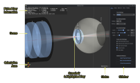
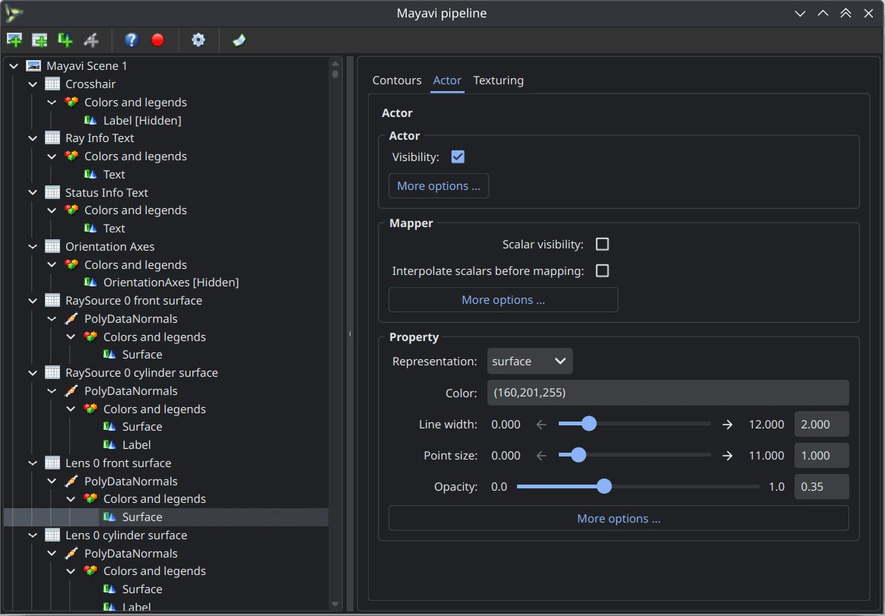
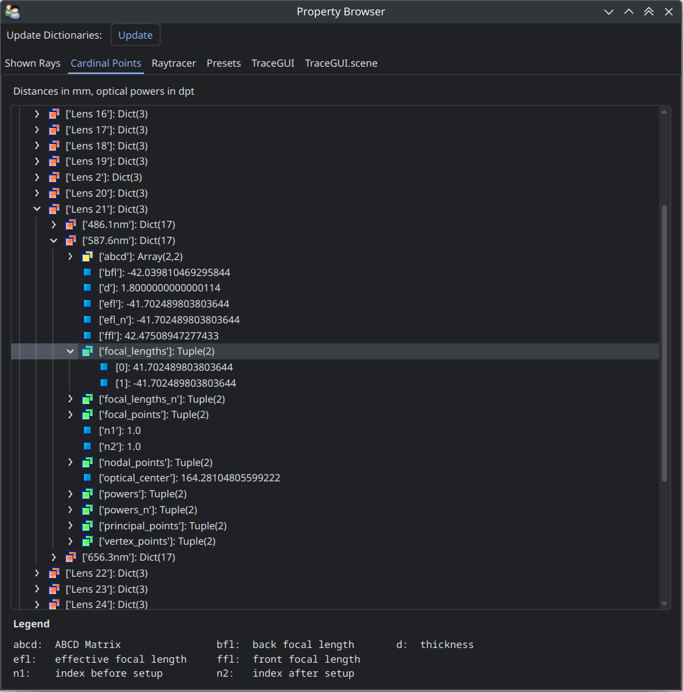
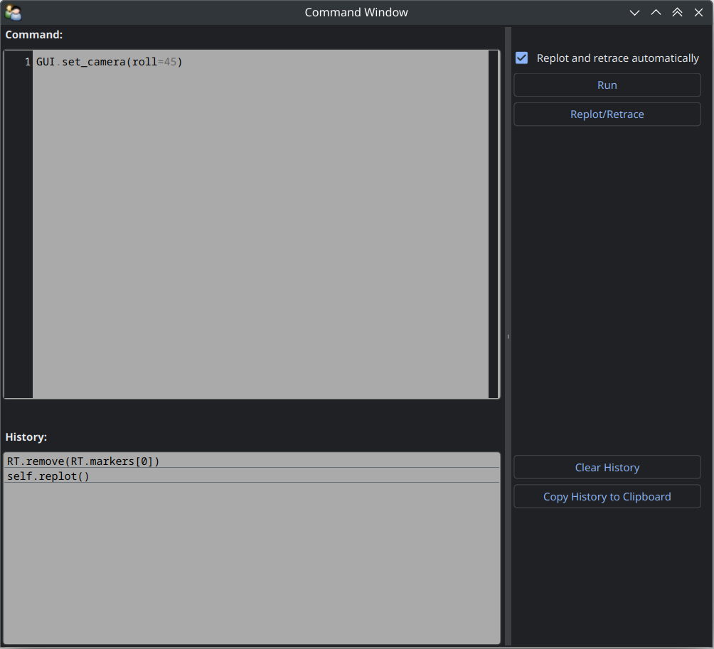

4.13. GUI Interaction#
4.13.1. Loading the GUI#
Initializing the GUI
First, we need to import into the TraceGUI into the current namespace:
from optrace.gui.trace_gui import TraceGUI
Let’s create some exemplary geometry:
RT = ot.Raytracer(outline=[-10, 10, -10, 10, -10, 60])
disc = ot.CircularSurface(r=3)
RS = ot.RaySource(disc, pos=[0, 0, -5])
RT.add(RS)
eye = ot.presets.geometry.legrand_eye()
RT.add(eye)
To create a TraceGUI, we need to pass the Raytracer as argument:
sim = TraceGUI(RT)
Running the GUI
The GUI is run with:
sim.run()
This loads the main window and also raytraces the geometry if it hasn’t already been traced.
Parameters
When creating the GUI, additional properties can be assigned. To set the scene to high contrast mode and increase the amount of rays, we can call:
sim = TraceGUI(RT, high_contrast=True, ray_count=2000000)
Available properties are discussed in Section 4.13.3.
Initial Camera View
The initial_camera parameter sets an initial camera view.
sim = TraceGUI(RT, high_contrast=True, ray_count=2000000,\
initial_camera=dict(center=[-50, -50, 0], direction=[-1, -1, -1], height=150, roll=-120))
These properties are directly passed to the TraceGUI.set_camera function.
You can read more about the camera settings in Section 4.14.4.
4.13.2. UI Overview#
4.13.2.1. Full UI#
{kind=link}

4.13.2.2. Scene#
Overview
Details on the scene navigation are available in the mayavi documentation here under “Mouse Interaction”. Inside the scene in the bottom left you can find orientation axes, that display the directions of the cartesian axes in the 3D view. When an action/tasks is running, you are informed by a status text in the bottom right. A list of keyboard shortcuts is provided below.
Shortcut |
Function |
|---|---|
|
sets the scene view to default view set by GUI parameter initial_camera or the y-side view if not provided |
|
maximize scene (hide toolbar and sidebar) |
|
toggle minimalistic view option |
|
toggle high contrast mode |
|
toggle label visibility |
|
render detector image with the current settings |
|
close all open pyplot plots |
|
randomly re-chose the plotted rays |
|
save a screenshot of the scene |
|
set the camera focal point to the position of the mouse.
Useful for scene rotations, since the geometry is rotated around this point.
|
|
change lighting properties |
|
anaglyph view (view for red-cyan 3D glasses) |
Picking and Clicking
A list of properties for the selected ray is shown when clicking on the ray intersection of ray and surface.
The intersection position is also marked with a red crosshair, while the picked ray is highlighted in red.
Even more properties are shown when using Shift + Click.
Right-clicking inside the scene displays the coordinates of the picked point.
Shift + Right Click moves the currently selected detector to the picked z-position.
High Contrast Mode
By activating the high contrast mode the background becomes white and all geometry elements grey or black. This is useful when creating scene views for academic output, as the background color in documents is also white.

Fig. 4.67 With plot_dark_mode enabled.#
4.13.2.3. Toolbar#
The mayavi scene toolbar is positioned above the scene. It includes buttons for the pipeline view window, different perspectives, fullscreen, screenshot saving and scene settings. Details are available in the mayavi documentation here.
{kind=link}
{kind=link}
{kind=link}
{kind=link}
{kind=link}
4.13.2.5. Additional Windows#
Besides the main window, there are additional windows in the interface. These will be discussed in Section 4.13.4, but a quick overview is provided here:
Window |
Access |
Function |
|---|---|---|
Pipeline View |
Leftmost button in the toolbar |
Access to viewing and editing the mayavi graphical elements |
Scene Settings |
Rightmost button in the toolbar |
mayavi settings, including lighting and scene properties |
Command Window |
button at the bottom of the main tab in the sidebar |
command execution and history for controlling the GUI and raytracer |
Property Browser |
button at the bottom of the main tab in the sidebar |
overview of raytracer, scene and ray properties as well as cardinal points |
4.13.4. Additional Windows#
4.13.4.1. Pipeline View#
The pipeline of the mayavi scene allows for the viewing and alteration of different geometry objects of the visible scene.
For instance, you can change the colors or representation of different elements.
Note that editing the visualization objects inside the scene is different from changing the geometry objects inside the Raytracer.
The former does not update the underlying geometry and does not update the rays.
A more detailed information about the pipeline view and the different objects populating the view are available in the mayavi documentation.
{kind=link}

4.13.4.2. Property Viewer#
The property viewer provides an interactive tree view to the following properties:
properties about the rays/points currently shown
cardinal points and other paraxial properties of the lenses and the whole lens setup
properties of the
Raytracerclassavailable presets
TraceGUIpropertiesTraceGUIscene properties
All displayed property values are a read-only snapshot.
To update the values, click on the Update button.
Navigate the tabs to switch to different trees.
{kind=link}

4.13.4.3. Command Window#
Inside this window commands can run from inside the TraceGUI class.
Scripting on the GUI or change Raytracer properties is possible, like adding, changing or removing geometries.
After entering a command in the upper text field the Run-button needs to be pressed.
Note that the command is only run, if the GUI is idle, therefore not doing any other tasks.
After running the command, the scene is automatically updated and the geometry is retraced if the option “Retrace and replot automatically” is set.
This can also be done manually with th Replot/Retrace Button.
The command is added to the history in the lower part of the window.
Copy each history field with Ctrl+C or export the whole history by pressing Copy History to Clipboard.
There is also a Clear button available that empties the history.
{kind=link}

The commands are run from within the TraceGUI object. To avoid race conditions and issues with scene rendering, all actions are run sequential. This leads to the UI being unresponsive while running the command.
There are multiple object aliases available to simplify coding inside the command window
Alias |
Reference |
|---|---|
|
the TraceGUI object (same as |
|
the raytracer used |
|
the lens list of the raytracer |
|
the aperture list of the raytracer |
|
the filter list of the raytracer |
|
the ray source list of the raytracer |
|
the detector list of the raytracer |
|
the marker list of the raytracer |
|
the volume list of the raytracer |
For instance, inside the command window you can write RT.remove(AL[1]) to remove the second aperture of tracing geometry.
By default, you also have access to most optrace classes, e.g. Raytracer, RGBImage, Group, RingSurface, ....
To include custom objects in the class, you can simply pass them to the constructor:
var = 78.2353
def func():
...
sim = TraceGUI(RT, important_function=func, important_variable=var)
This also makes them available for usage in the command window as GUI.important_function(), GUI.important_variable, ....